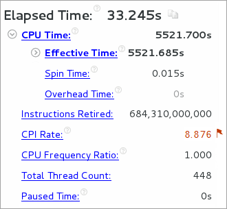

When the sample application exits, the
Intel® VTune™ Amplifier
finalizes the results and opens the Hotspots viewpoint where each window or
pane is configured to easily identify code regions that consumed a lot of CPU
time. To interpret the data on the sample code performance, do the following:
When the sample application exits, the
Intel® VTune™ Amplifier
finalizes the results and opens the Hotspots viewpoint where each window or
pane is configured to easily identify code regions that consumed a lot of CPU
time. To interpret the data on the sample code performance, do the following:
Note
The screenshots and execution time data provided in this tutorial are created on a system with more than 240 logical cores. Your data may vary depending on the number and type of CPU cores on your system.
Analyze Basic Performance Statistics
Start analysis with the
Summary window. To interpret the data, hover over the question
mark icons
 to read the pop-up help and
better understand what each performance metric means.
to read the pop-up help and
better understand what each performance metric means.

Elapsed time for the matrix application is 33.245 seconds. This is wall clock time from the beginning to the end of the collection, including data allocation and calculation. Note that Elapsed time metric provided in the Summary window is different from the Execution time provided in the application output, which includes calculation only.
CPU Time is equal to 5521.685 seconds. It is the sum of CPU time for all application threads.
Instructions Retired metric displays an estimated number of instructions executed during the collection (captured in the INSTRUCTIONS_EXECUTED hardware event), which is an essential component of the ratio given below.
Clockticks per Instructions Retired (CPI) Rate is an event ratio, also known as Cycles per Instructions, which is one of the basic performance metrics. High CPI Rate is marked with a red flag and signals a possible performance issue. Potential causes are memory stalls, instruction starvation, branch misprediction, or long-latency instruction.
For more detailed analysis, switch to the Bottom-up window to identify code sections responsible for detected problems.
Identify Most Performance-Critical Functions
By default, the data in the grid is sorted by Function. You may change the grouping level using the Grouping drop-down menu at the top of the grid.
Analyze the CPU Time column values. You may hover over a column name to see the formula used for the calculation of this metric. The CPU Time column is marked with a yellow star as the Data of Interest column, which means that the VTune Amplifier uses this type of data for some calculations (for example, filtering, stack contribution, and others). Functions that took most CPU time to execute are listed on top.
The multiply1 function is an obvious hotspot that took the most CPU Time and the biggest count for the Instructions Retired event. Its CPI rate is also considered as high and is marked by the VTune Amplifier as a performance issue. You may hover over the pink cell to read a description of the issue and proposed solution.